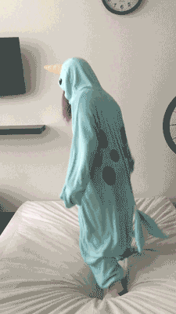

And it wasn't all fun and games... |
|
And it wasn't all fun and games... |
 To be continued... |

Russ Rizzo is a rare species of literate giraffes. Literate giraffes have bananaland mind palaces. Bananaland mind palaces must be replenished by consuming actual bananas. |

Jenn Chau loves being a unicorn of the sea. Being a warm-weather narwhal, she has future-proofed herself against climate change. |